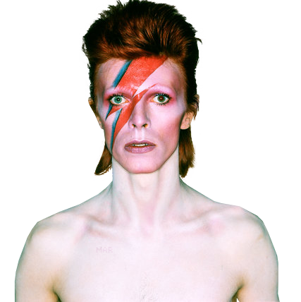

David Bowie
A space man

David Bowie as Ziggy Stardust
History
David Robert Jones OAL (8 January 1947 – 10 January 2016), known professionally as David Bowie (/ˈboʊi/ BOH-ee),[1] was an English singer-songwriter and actor. A leading figure in the music industry, Bowie is regarded as one of the most influential musicians of the 20th century. He was acclaimed by critics and musicians, particularly for his innovative work during the 1970s. His career was marked by reinvention and visual presentation, with his music and stagecraft having a significant impact on popular music.
For more information